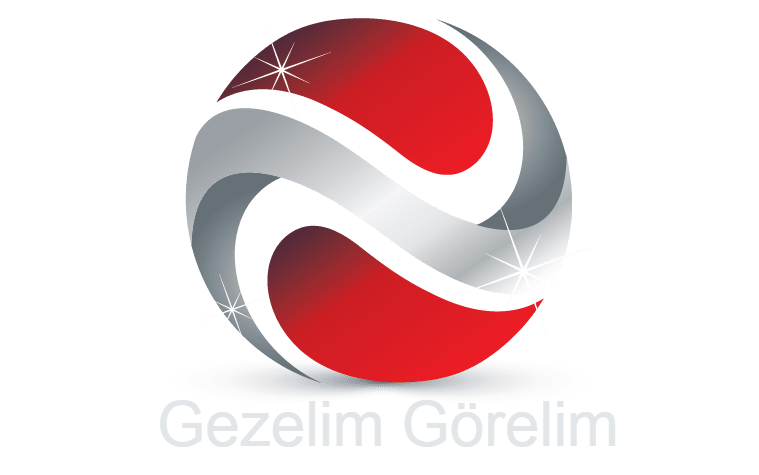
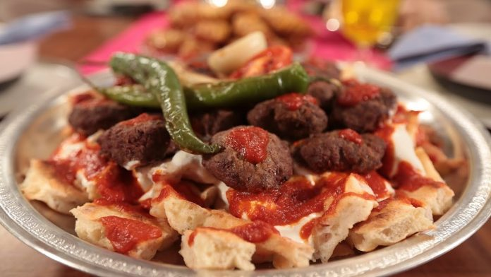
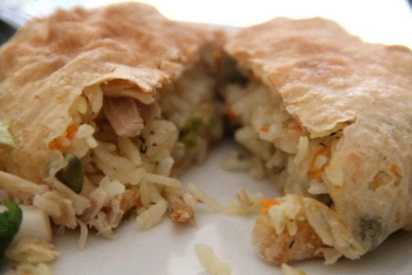
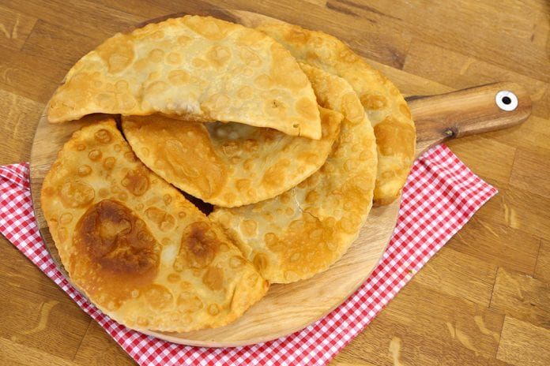
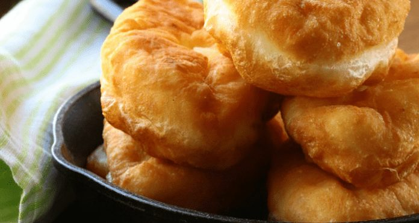
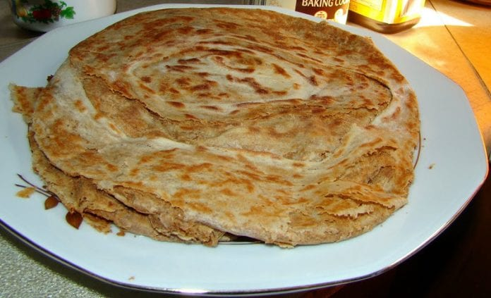
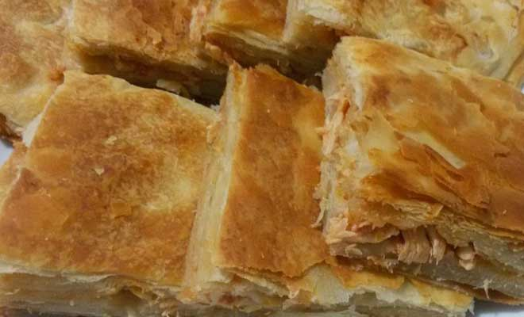
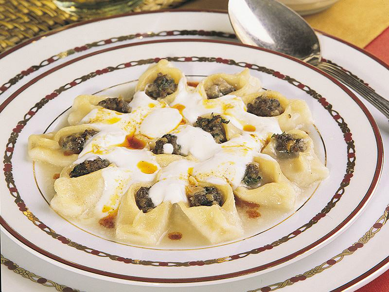

Anasayfa
Gezilecek Yerler
Meþhur Yemekler
1. Balaban Köfte

2. Yufkalý Büryan

3. Çibörek

4. Kýygaþa

5. Kavurma Börek
6. Haþhaþlý Gözleme

7. Boza
8. Met Helvasý
9. Göbete

10. Tatar Böreði
